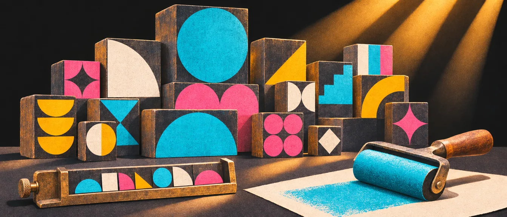
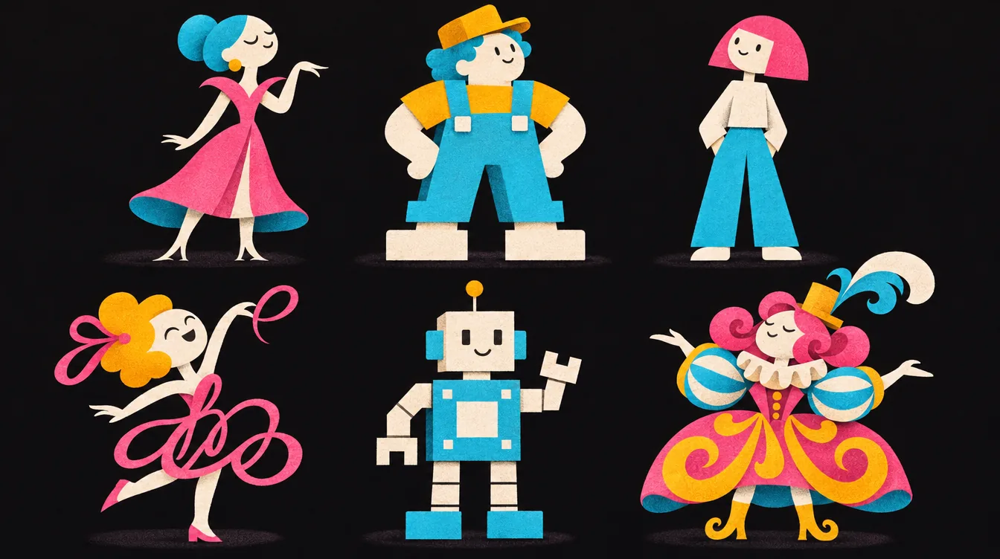
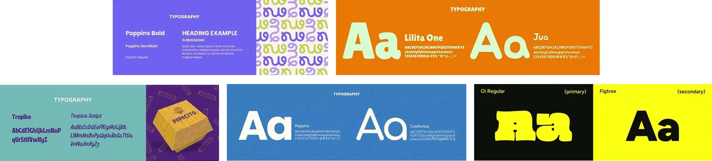

טיפוגרפיה
עוד לפני שמישהו קורא מילה, הפונט כבר אמר לו אם המותג רציני או שובב, יוקרתי או עממי. בפרק הזה: מה כל סוג פונט משדר, איך בוחרים זוג שעובד, איך בונים היררכיה, ואיך עברית ואנגלית חיות יחד באותו מותג.

הפונט הוא הקול של המותג

הטיפוגרפיה היא אחד המרכיבים החזקים ביותר בזהות של מותג: היא מעבירה אישיות, סגנון וטון דיבור עוד לפני שקוראים מילה אחת.
בחרו פונט ראשי שישמש לכותרות ולחומרים המרכזיים, ופונט משני לטקסטים משלימים, או השתמשו בפונט אחד עם משפחת משקלים עשירה (Regular, Medium, Bold, Light) וכו’.
שמרו על אחידות טיפוגרפית בכל הפלטפורמות: לוגו, אתר, מודעות, מצגות ורשתות חברתיות, כדי ליצור חוויה עקבית ומקצועית.
אין צורך להשתמש בפונט של הלוגו בשפה העיצובית הכללית. לפעמים דווקא עדיף שהפונט בלוגו יהיה ייחודי וחד־פעמי, בעוד שיתר השפה הגרפית תישען על פונטים קריאים, מאוזנים ונגישים שמתאימים לשימוש יומיומי.
שישה סוגי פונטים, שש אישיויות
אותה מילה, שישה פונטים. שימו לב כמה התחושה משתנה, עוד לפני שבכלל חשבתם על הצבע או על הלוגו.
Sans Serifמודרני, נקי, טכנולוגי
| סוג פונט | תחושה עיקרית | מתאים ל... | הערות |
|---|---|---|---|
| Sans Serifללא עיטורים | מודרני, נקי, טכנולוגי | הייטק, סטארטאפים, אפליקציות, מותגים צעירים, חינוך, בריאות, אופנה מודרנית, לייף־סטייל | קריא במיוחד במסכים ובשפה דיגיטלית. מתאים למיתוג עכשווי וחדשני. |
| Serifעם עיטורים | קלאסי, אמין, יוקרתי | מוסדות, עיתונות, עריכת דין, פיננסים, ייעוץ, חינוך, מותגים עם מסורת או יוקרה | משדר רצינות, אמינות ואלגנטיות. טוב למותגים עם עומק היסטורי. |
| Slab Serifעיטורים עבים | יציב, חזק, בולט | מותגים מסחריים, בנייה, תעשייה, ספורט, לוגיסטיקה, ביטוח, תחבורה | מעניק תחושת כוח ונוכחות. מתאים לעולמות פיזיים ו„כבדים”. |
| Script / Handwritten | אישי, רגשי, יצירתי | אופנה, לייף־סטייל, טיפוח, קוסמטיקה, ילדים, אמנות, אוכל ובייקרי, אירועים | יוצר קשר רגשי וחמים. להשתמש במידה: פחות קריא בטקסטים ארוכים. |
| Display / Decorative | ייחודי, בולט, מזוהה | לוגואים, כותרות גדולות, פרסום, שלטי חוצות, אריזות, בידור, תרבות | מושך תשומת לב, אבל לא לקריאה ממושכת. טוב לשימוש ממוקד. |
| Monospace | טכני, מקצועי, אנליטי | טכנולוגיה, פיתוח, עולמות קוד, דאטה, סייבר, חקר, מדע, גיימינג | משדר דיוק, סדר וחדשנות. טוב לעולמות טכנולוגיים ומדעיים. |


בתוך כל סוג יש עוד משפחות
הטבלה למעלה היא המפה הגדולה. כשמתקרבים, גם הסריפים וגם הסנסים מתחלקים לתת־משפחות, וכל אחת מרגישה אחרת:
סריף (Serif)
- Old Style
- קליגרפי ורך, הציר של האות נוטה באלכסון. Garamond, Caslon.
- Transitional
- עיטורים חדים יותר, יותר סדר. Baskerville, Georgia.
- Modern / Didone
- ניגוד קיצוני בין קו עבה לדק. אופנה ויוקרה. Bodoni, Didot.
- Slab
- עיטורים עבים ומרובעים. Rockwell, Clarendon.
ללא עיטורים (Sans Serif)
- Grotesque
- קצת עקום וקצת אופי, ניגוד מורגש בעובי. Franklin Gothic.
- Neo-Grotesque
- ניטרלי ומלוטש. Helvetica, Roboto.
- Geometric
- בנוי מעיגולים וריבועים. Futura, Montserrat, Poppins.
- Humanist
- נחשב מהקריאים ביותר בגופי טקסט, יש בו משהו מכתב היד. Gill Sans, Frutiger, Myriad.
בעברית החלוקה פחות חדה, אבל אותו היגיון עובד: פונט עם ניגוד בין קווים עבים לדקים (כמו פרנק רוהל) מרגיש קלאסי, ופונט בעובי קו אחיד (כמו היבו או רוביק) מרגיש עכשווי.
טיפים לבחירת פונטים
- ודאו שהפונטים תומכים בשפה הדרושה (עברית, אנגלית וכו’) ושומרים על אחידות בין השפות. עברית ואנגלית
- אל תערבבו יותר מדי פונטים: לרוב שניים מספיקים (אחד לכותרות, אחד לגוף הטקסט).
- בחרו פונטים שמשקפים את אישיות המותג: יוקרתי, צעיר, מקצועי, טכנולוגי, טבעי וכו’.
- שמרו על ניגודיות משקלית בין הפונטים (כותרת עבה מול טקסט רץ דק) כדי ליצור היררכיה ברורה.
- הימנעו משימוש יתר באותיות רווחות מדי או דחוסות מדי. זה פוגע בקריאות.
במספרים: את הטקסט הרץ משאירים בריווח האותיות של הפונט עצמו. כותרות גדולות אפשר לצופף מעט. ובאנגלית, טקסט באותיות גדולות בלבד (ALL CAPS) צריך דווקא ריווח נוסף, בערך +20 עד +100 ביחידות של אילוסטרייטור.
איך מזווגים שני פונטים
הכלל הבסיסי: ניגוד עם הרמוניה. שני הפונטים צריכים להיות שונים מספיק כדי שהעין תבין מיד מי כותרת ומי טקסט, ודומים מספיק כדי להרגיש מאותה משפחה.
- סריף לכותרת וסנס לגוף (או להפך) הוא הזיווג הבטוח ביותר.
- אל תזווגו שני פונטים כמעט זהים. זה נראה כמו טעות, לא כמו החלטה.
- חפשו גובה אותיות דומה בשני הפונטים, כדי שישבו טוב באותה שורה.
- שניים, לכל היותר שלושה פונטים. כל פונט נוסף מחליש את הקול של המותג.
זוגות לטיניים קלאסיים להתחלה: Playfair Display + Lato (מגזיני ויוקרתי), Montserrat + Open Sans (נוכח ושקט), Roboto + Lora (מודרני וקלאסי). כלים שעוזרים: FontJoy מציע זוגות בעזרת בינה מלאכותית, Typewolf מראה פונטים באתרים אמיתיים, וFontpair מציג זוגות מוכנים.
היררכיה: מי צועק ומי לוחש
הגדירו פונטים לשימושים שונים: כותרת ראשית, משנה, טקסט רץ, מספרים וציטוטים. הראו דוגמה אמיתית לעמוד מעוצב שממחיש את ההיררכיה הזו. צעד 4 מתוך שבעת הצעדים
בעמוד הטיפוגרפיה של הפרויקט צריך להראות:
- פונט כותרות
- פונט גוף
- היררכיה טיפוגרפית. לדוגמה: H1, H2, H3, Body text, Caption
סולם גדלים: לא לנחש מספרים
במקום לבחור גדלים „לפי העין”, בוחרים גודל בסיס לטקסט הרץ (ברוב המסכים 16px) ויחס אחד קבוע. כל רמה בהיררכיה היא הבסיס כפול היחס, שוב ושוב. התוצאה: גדלים שמרגישים קשורים זה לזה, גם אם אף אחד לא יודע להסביר למה.
הבטוח
ברירת המחדל לאתרים ולאפליקציות. ניגוד ברור בלי דרמה.
המגזיני
יותר ניגוד בין כותרת לטקסט. טוב לעמודי תוכן ולמאמרים.
הדרמטי
הפרש ענק בין הרמות. מתאים לפוסטר ולעיצוב יצירתי, פחות למסך קטן.
וכלל אצבע: במובייל יחס קטן יותר, בדסקטופ יחס גדול יותר. כלים שעושים את החישוב בשבילכם: Typescale וUtopia.
ככה זה נראה בעמוד אמיתי
ההיררכיה לא נגמרת בכותרות. גם מספרים (מחירים, נתונים, תאריכים) וגם ציטוטים צריכים סגנון קבוע משלהם, אחרת כל מעצב ימציא אותם מחדש:
המאפייה · עדכונים
תווית עליונהAssistant 700 · 13px
לחם של בוקר
כותרת ראשיתFrank Ruhl Libre 700 · 46px
המאפייה פותחת סניף שני
כותרת משנהFrank Ruhl Libre 700 · 24px
אחרי חמש שנים בפינה של הרחוב, אנחנו פותחים מאפייה נוספת. אותו תנור, אותם אופים, ואותה מחמצת שמגדלים אצלנו מהיום הראשון.
טקסט רץAssistant 400 · 17px / 1.7
₪18כיכר מחמצת
מספריםAssistant 700 · 44px
„הריח של התנור בשש בבוקר הוא הפרסומת הכי טובה שלנו.”
ציטוטFrank Ruhl Libre 400 · 22px
צילום: צוות המאפייה · 12.03.2026
כיתובAssistant 400 · 13px
אורך שורה: 45–75 תווים
שורה קצרה מדי מקפיצה את העין כל רגע לשורה הבאה. שורה ארוכה מדי מאבדת אותה בדרך חזרה. הטווח הנוח הוא 45–75 תווים בשורה, ובערך 66 הוא האידיאל. גררו ובדקו:
ואת הריווח בין השורות (Leading) מגדירים יחד עם הגריד, כי הוא חלק ממערכת הריווחים של כל העמוד. ריווח בין שורות
עברית, אנגלית, או שתיהן
החליטו על שפת התקשורת המרכזית:
- מותג בינלאומי ← אנגלית
- מותג מקומי ← עברית
- שילוב מושכל בין השתיים
השפה משפיעה גם על הטון והאישיות של המותג.
אם המותג ישראלי ובנוסף בינלאומי, אז בחרו פונט לעברית ופונט לאנגלית, ובדקו שהם שומרים על אחידות זה לצד זה.
למה עברית ואנגלית לא יוצאות באותו גודל
באותו גודל נקודה, אותיות עבריות ולטיניות לא יושבות באותו גובה. רוב האותיות בטקסט לטיני הן אותיות קטנות, בגובה ה־x, ואילו האות העברית גבוהה מגובה ה־x של הלטינית, ונמצאת בין גובה ה־x לגובה האות הגדולה. לכן באותו גודל העברית נראית גדולה וכבדה יותר. הנה מדידה אמיתית בתוך הפונטים עצמם:
- גובה האות הגדולה H
- גובה ה־x
- גובה האות העברית
מה עושים עם זה:
- מכוונים לפי העין, לא לפי המספר. נקודת התחלה מקובלת: העברית בכ־85% מגודל האנגלית, ומשם מכוונים עד שהשורות נראות באותו משקל.
- שימו לב לכיוון של העובי. בעברית הקווים האופקיים הם העבים, בלטינית האנכיים. פונטים בעובי קו אחיד מקטינים את ההתנגשות הזו.
- בחרו משפחות שתוכננו לשתי השפות, כמו Heebo, Rubik או Noto Sans Hebrew, שבהן העברית והלטינית צוירו כדי לעבוד יחד.
- השאירו מקום. אותו מסר יכול להיות ארוך או קצר ב־30%–50% בין השפות, אז עמוד שמתוכנן בדיוק לטקסט העברי עלול להישבר באנגלית.
- ניקוד מגדיל את גובה השורה. בטקסט מנוקד הגדירו ריווח שורות קבוע, אחרת השורות יקפצו.
פונטים עבריים טובים להתחלה
כולם חינמיים בגוגל פונטס, וכולם כוללים גם לטינית:
סנס נקי ומאוזן עם הרבה משקלים. בחירה בטוחה לממשקים ולטקסט רץ.
פינות מעוגלות שנותנות תחושה ידידותית ונגישה.
קריא מאוד גם בגדלים קטנים. מצוין לגוף הטקסט.
חלק ממשפחת Noto של גוגל, מתואם עם עשרות כתבים אחרים.
גרסה חופשית של פרנק־רוהל הקלאסי. ניגוד עובי, תחושה ספרותית ומכובדת.
עבה וחזק, לכותרות, לשלטים ולאריזות. לא לטקסט ארוך.
ומעבר לגוגל: הסטודיו אאא (AlefAlefAlef) מציע פונטים עבריים חינמיים כמו „גברת לוין” ו„מערבון”, לצד מאמרים מקצועיים על טיפוגרפיה עברית, ופונטביט היא ספרייה גדולה של פונטים עבריים מסחריים.